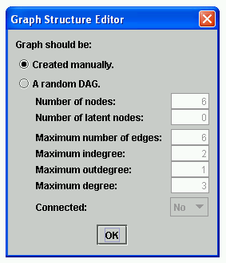

General Graphs |
The "general graph" editor can construct graphs where the edges have endpoints of three different types: null(-), arrow (->), and circle (-o). For constructing graphs for the purposes of building models, the circle endpoint is not used; it is included because the outputs of some search algorithms use it, and these output graphs sometimes need to be edited. See Tetrad Graph Types for more details.
Time series graphs are treated separately only because they have a regular temporal structure that can be represented directly; in principle, they can be considered examples of general graphs as well.
To construct a general graph, place a Graph box on the workbench (see Graphs), double click the Graph box, choose "General Graph" from the menu, and click "OK." You will see the following dialog.

If you select "Created manually" and click "OK," a blank graph editor window is opened. If you select "A random DAG," you will need to fill in parameters to generate a random DAG. See Generating Random DAGs for more information. This DAG will be treated like a general graph, so that if you edit it you will be able add edges to it that aren't directed edges (-->) and you will be able to construct cycles.
You may at this point add variables and edges to the graph, or remove them if they're already there. To add a measured variable to the graph, click "Add Variable" and then click in the white workbench area where you want the measured variable to be located. To add a latent variable to the graph, click "Add Latent" and then click in the white workbench area where you want the latent variable to be located. The names of an added variable will be the first name in the sequence X1, X2, ..., that's not already in the graph. These names may be changed; see Editing Node Properties for details.
To remove a variable from the graph, click on the variable you want to delete to select it and then press the delete key. If you remove a node from the graph, all of the edges attached to it will be removed as well.
To add an edge to the graph, click the type of edge you want to add, click and hold the mouse button down over the variable you want to edge to be from, and then drag the mouse to the variable you want the edge to be to. There are four types of edges you may add: directed (-->), undirected (---), unoriented (o-o), and bidirected (o->). Cycles are permitted.
To remove an edge from the graph, click on the edge you want to remove to select it and then press the delete key.
If all you want to do is turn edges that aren't directed into directed edges or change the directions of directed edges, there is a shortcut way to do this. Simply click on the endpoint of the edge you want the arrow to be on, and the edge will change direction for you. Other edge orientation shortchuts are also available. See Edge Orientation Shortcuts.
A sample graph might look like this, after adding five variables and six edges:
Once you have made a graph, you may rearrange the nodes by clicking and dragging; the edges will follow along so that the structure of the graph remains the same. If you would like to move a whole section of nodes to another location, draw a "rubberband" around them and click on any one to move them. See Selecting Groups of Nodes for details. If you would like to change the name of a variable, or change whether the variable is latent or measured, double click the variable, edit its properties, and click "OK." See Editing Node Properties for details.
When you click "Save," the graph editor window will close, and the contents will be saved in memory. If you click "Cancel," the changes you made while editing will be disgarded, and the state of the graph before editing will remain unchanged. You may change the graph you made at any time by reopening the Graph box and adding or remove variables or edges or rearranging variables.
If you right click on the Graph box, a popup menu will appear with several options. See Popup Menus for more detail.
A "General Graph" model can be self-standing, as described above. However, it can also be made a child of a number of other models of a variety of different box types. Usually what this does is to make a copy in the "General Graph" box of a preexisting graph in the parent model, which is often a convenient thing to be able to do. The following models all have graphs that, if they exist, can be copied into a "General Graph" model:
In certain special cases, making a "General Graph" model a child of another model has a specialized behavior. If you make a "General Graph" model a child of a Data box model, the effect is to create a graph with all of the variables in the data set but no edges, as illustrated below.